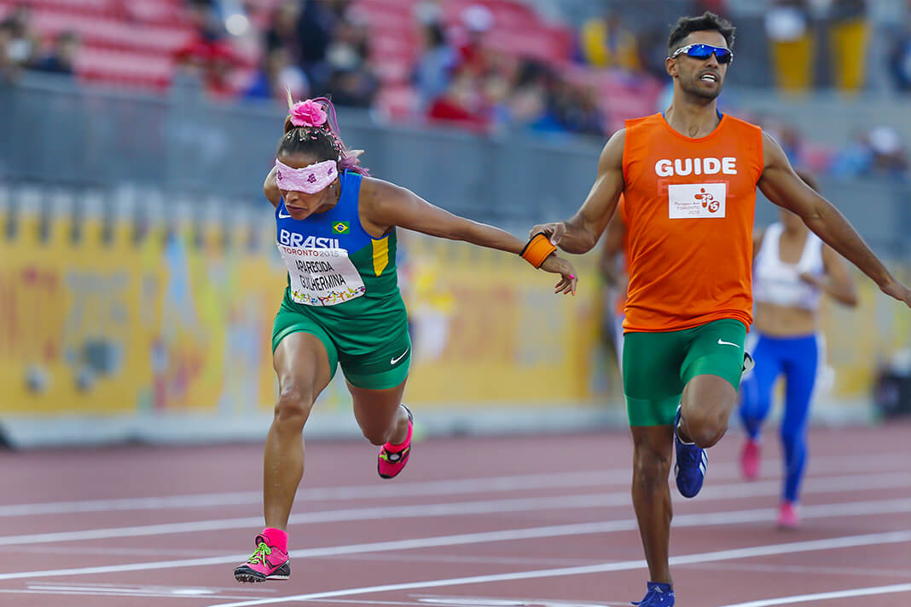
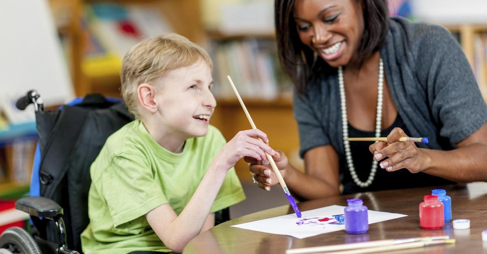

Inclusão das PcD

Hoje, no Brasil, milhares de pessoas com algum tipo de deficiência estão sendo discriminadas nas comunidades em que vivem ou sendo excluídas do mercado de trabalho. A estrutura das sociedades, desde os seus primórdios, sempre inabilitou os portadores de deficiência, marginalizando-os e privando-os de liberdade.
Inclusão no esporte
A pessoa com deficiência tem o direito de ser incluída na sociedade, sobretudo no esporte. A Constituição Federal Brasileira prevê a obrigatoriedade do poder público em promover e assegurar o acesso às atividades paradesportivas.
História dos esportes adaptados para pessoas com deficiência
O esporte adaptado surgiu inicialmente para pessoas com deficiência auditiva, seguidas de atividades como natação e atletismo para deficientes visuais. Já a deficiência física começou a ser trabalhada após a Segunda Guerra Mundial para tratamento e inserção dos soldados mutilados.
Esse foi o pontapé para o surgimento de competições que resultaram nos primeiros Jogos Paralímpicos, em 1960, em Roma. Participaram 400 atletas de 23 países em provas para cadeirantes.
Um pouco antes dessa data, o desenvolvimento de esporte adaptado se deu por conta da criação da fundação do Clube do Otimismo no Rio de Janeiro e do Clube de Paraplégicos em São Paulo.
Hoje, é administrado por seis principais instituições:
Associação Brasileira de Desporto para Cegos (ABDC);
Associação Nacional de Desporto para Excepcionais (ANDE);
Associação Brasileira de Desportos em Cadeira de Rodas (ABRADECAR);
Associação Brasileira de Desportos para Amputados (ABDA);
Associação Brasileira de Desportos para Deficientes Mentais (ABDEM);
Confederação Brasileira de Desportos para Surdos (CBDS).
Além disso, também existe o Comitê Paralímpico Brasileiro, responsável pelo regimento das 24 modalidades paradesportivas que fazem parte da entidade. Algumas delas são:
Atletismo;
Basquete em cadeira de rodas;
Natação;
Vôlei sentado.
Inclusão no mercado de trabalho
Para que as pessoas portadoras de algum tipo de deficiência não fiquem desempregadas, foi criada uma lei que garante uma porcentagem de postos de trabalhos para os PCDs.
Sancionada em Julho de 1991, a Lei 8.213 dispõe sobre os mecanismos de previdência social e institui uma cota para inserção de PCDs no mercado de trabalho.
Em julho de 2019, nosso país possuía mais de 35 mil empresas que se enquadravam nesta lei, portanto, deveriam gerar mais de 750 mil postos de trabalho para pessoas com deficiência. Contudo, somente 48% destas vagas estavam preenchidas por deficientes, sendo que em 2009 apenas 28% das vagas reservadas eram ocupadas por PCDs.
A nossa sociedade precisa mudar essa mentalidade de que a deficiência invalida a pessoa para qualquer tipo de trabalho. Hoje em dia pessoas com deficiência estudam e trabalham normalmente e podem e devem ser contratadas como qualquer outra pessoa.

Inclusão nas escolas
Nos últimos anos, ações isoladas de educadores e de pais têm promovido e implementado a inclusão, nas escolas, de pessoas com algum tipo de deficiência ou necessidade especial, visando resgatar o respeito humano e a dignidade, no sentido de possibilitar o pleno desenvolvimento e o acesso a todos os recursos da sociedade por parte desse segmento.
A educação inclusiva é um tema de extrema importância, porém muitas instituições ainda não contam com as adaptações adequadas para que essa inclusão ocorra.
Embora a inclusão seja desejada, ela não é uma tarefa simples. As instituições de ensino precisam adotar métodos para fazer com os desafios que aparecem diariamente sejam superados, como:
-Lidar com a diferença;
-Atuar contra o preconceito e o desconhecimento sobre a pessoa com deficiência;
-Adaptar estruturas, processos, currículos, sistemas e modelos de ensino;
-Qualificar os colaboradores.
Inclusão na escola:Vídeo